天谕-红包封面流量主多维玩法
来源：https://tbhvciwc2p.feishu.cn/docx/StlDd6Vo6olu2DxtSfZcMl4EnEh
这是一个偏BUG的玩法，可能很快就会遭到官方打压，不过理解逻辑确实有点意思
第一步：注册个人订阅号
- 打开微信公众平台选择注册订阅号https://mp.weixin.qq.com/
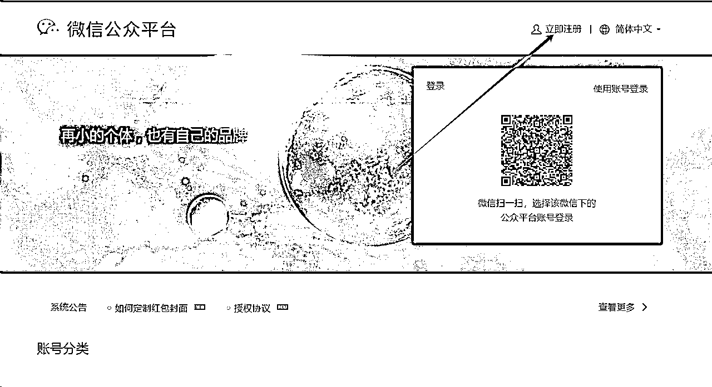
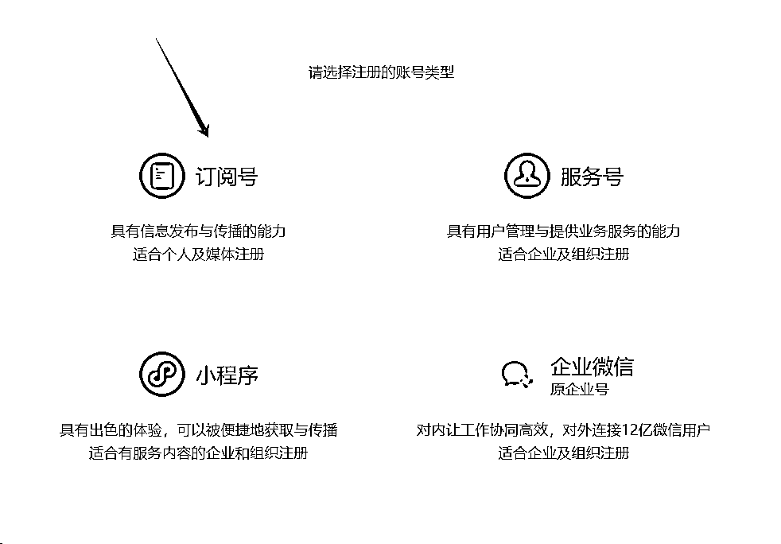
- 设置配置自定义菜单和自动回复：自定义菜单自己按照自己的想法可以添加，图省事的直接照搬即可
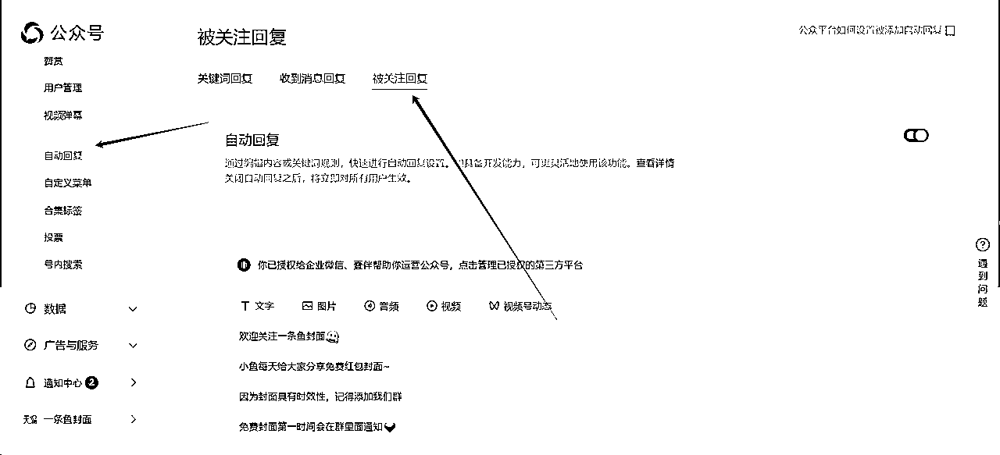
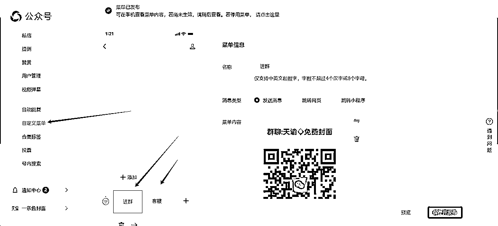
- 开通流量主：这个需要500粉丝才能开通，新号自己淘宝即可搜索解决。
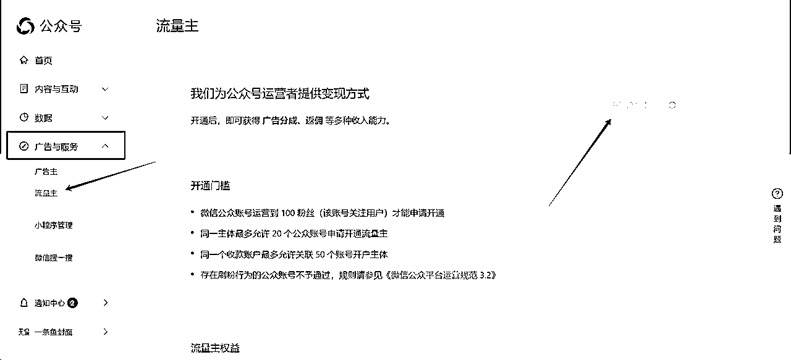
第二步：复制同步同行文章
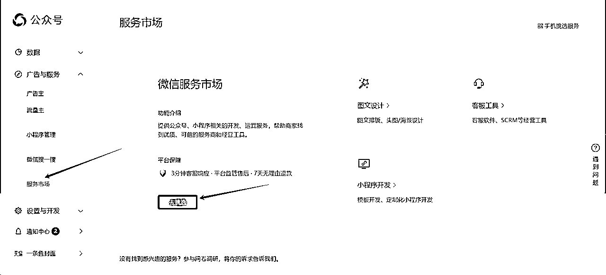
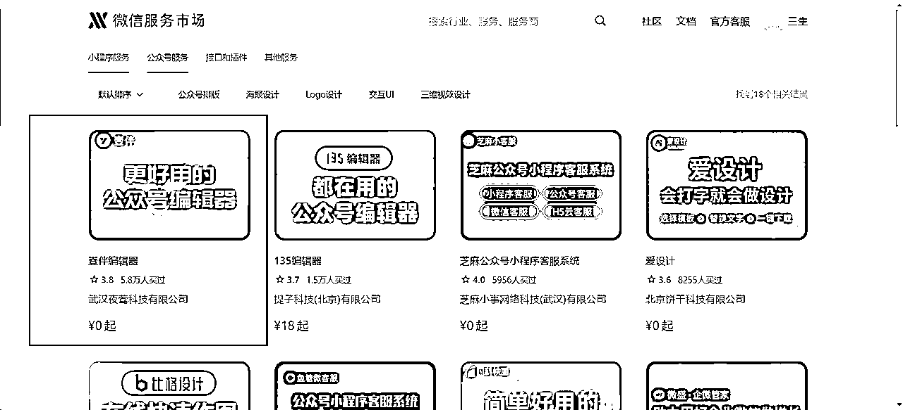
- 找到同行文章-复制他们的链接-用刚才开通的壹伴编辑器一键导入即可
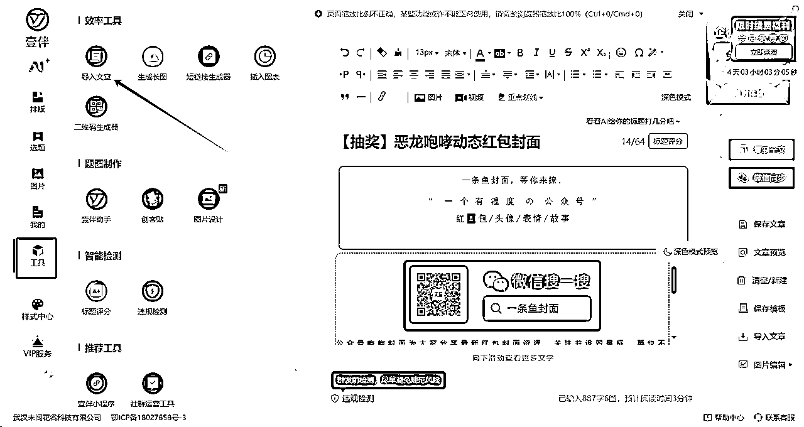
- 导入了文章修改一下别人的ID昵称和图片，然后点击同步即可

- 同步了的文章去微信公众号后台-草稿箱即可添加广告发布
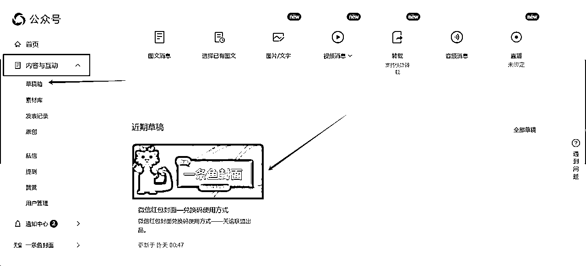
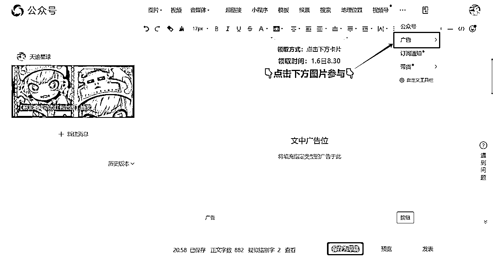
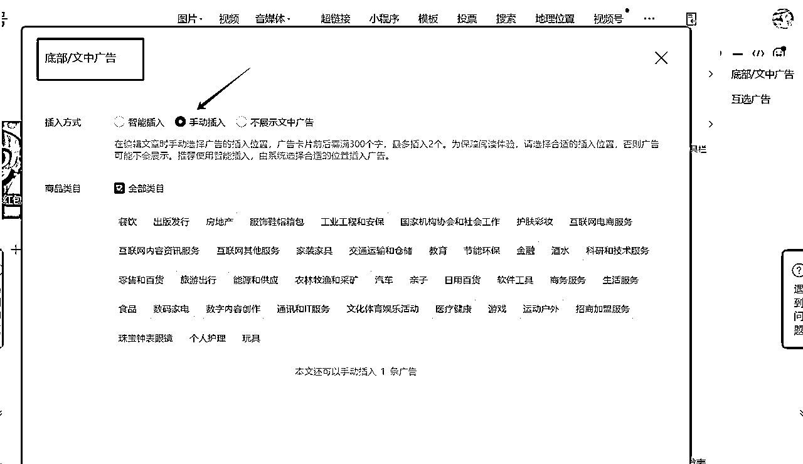
第三步：引流群运营
- 咱们的公众号菜单栏设置了进群，进群以后每天运营维护客户，引导客户点击浏览咱们的文章
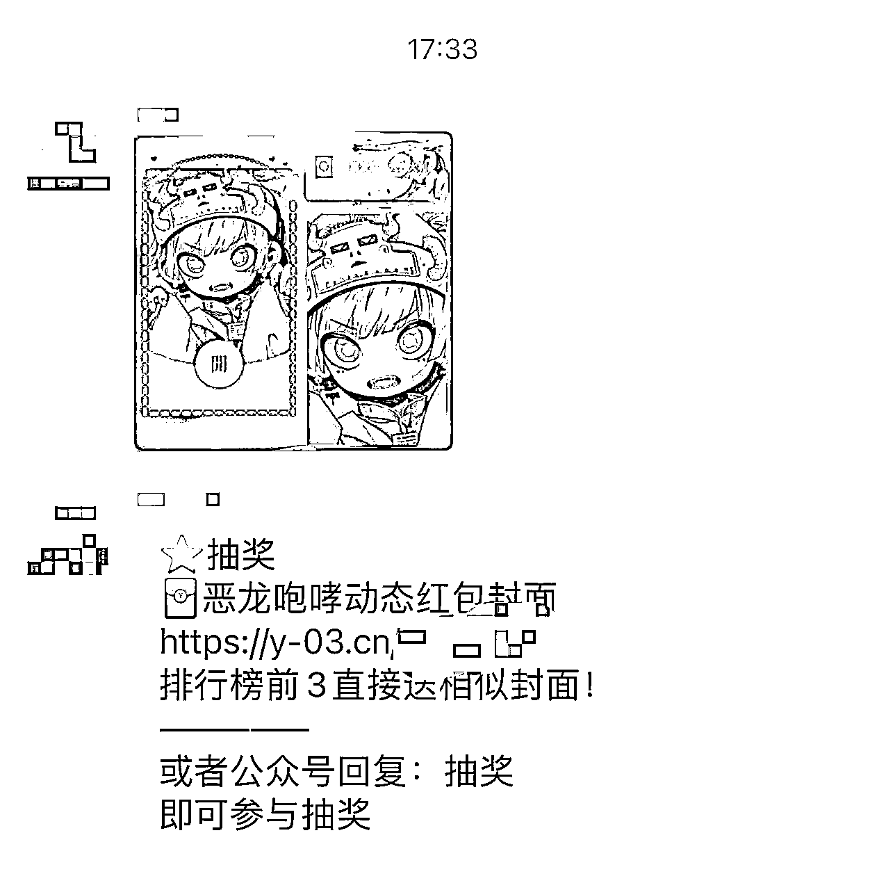
- 群制作的时候记得使用活码，如果引流的群多，每天发不过来，直接使用微信转发软件即可，几十几百个群都可以同步发送，非常方便。
- tips：因为咱们是订阅号，发的文章不会弹出来微信界面，所以群运营至关重要
第四步：抖音/快手/小红书引流
- 公域流量引流大家都是大佬，我就不露拙了。提供几个视频案例给大家参考
- 还有老公给老婆发5个大小金额不一的红包让老婆随便挑3个，这个也可以植入封面引流
第五步：流量多维转化
- 项目的生命周期其实很多，就是一个适合大众普通人的过年节点项目
- 所以群如果你引流的效果还不错，可以考虑加入教学收徒的模式变现